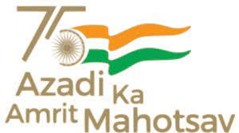
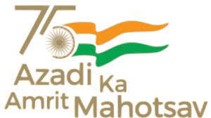

SERB sponsored 7-day High-End Workshop (Karyashala) on
Advances in Carbon dioxide Capture and Utilization for Sustainable Climate (ACCUSC-2022)

.png)

 

SERB sponsored 7-day High-End Workshop (Karyashala) on
Advances in Carbon dioxide Capture and Utilization for Sustainable Climate (ACCUSC-2022)
Funded by
July 4-10, 2022
Organized by
Science and Engineering Research Board (SERB),
Department of Science and Technology,
Government of India Under Accelerate Vigyan Scheme
Department of Chemical Engineering,
in collaboration with AIChE NIT Rourkela Student Chapter,
National Institiute of Technology, Rourkela
Karyashala Objectives
'KARYASHALA' is a noble endeavor of Government of India by Science and Engineering Board (SERB) under Accelerate Vigyan Scheme to improve research productivity of promising PG and PhD students from universities and colleges through high-end workshops on specific themes. This program aims to provide opportunities to acquire specialized research skills. These workshops will primarily be facilitated at organizations/ institutions/laboratories of national importance.
Department of Chemical Engineering, National Institute of Technology, Rourkela has decided to be a part of this unique initiative and share our Institutional resources with the society towards higher goals of national importance. Thus, the current workshop has come into being. This event is sponsored by SERB.
Important Dates:
Registration opens:
4-10th July 2022
Last date for registration:
4-10th July 2022
Workshop dates:
4-10th July 2022
About the Course
'KARYASHALA' is aimed to provide hands-on
experience to the students primarily from
universities, colleges, private academic institutions
and newly established institutes in handling /
troubleshooting of high-end scientific instruments
and such skill development on themes required for
research work. The program is meant to support
motivated PG and Ph.D. level students, who are
having a strong willingness to get excellence in their
scientific and engineering research pursuits.
Following are the objectives of this high end
workshop:
1. To impart the knowledge of design of
experiments and thus enable the scholars to
understand it with real life examples.
2. To demonstrate and hands on with the different
advanced manufacturing equipment available
with the institute.
3. To develop programming skills among
researchers to deal with customized coding
problems related with their research work.
4. To impart knowledge on various avenues of
active research in mechanical engineering and
interdisciplinary areas.